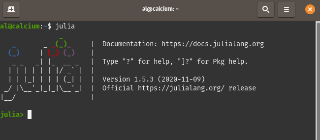
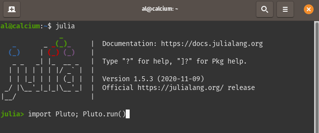
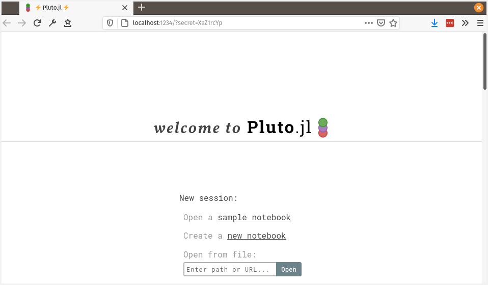

Lab Notebook Guidelines for CHEM 330
Introduction - The purpose of a lab notebook
Your lab notebook is the single exact, permanent, legally defensible, archival record of what you did in lab. In an academic setting, notebooks are often used by the person who wrote the notebook or a lab colleague when trying to repeat an experiment, process data, or publish results. In a professional setting, they may be used to communicate work to new employees, defend against patent lawsuits, or support forensic or toxicological conclusions in a court of law. A good test of your lab notebook is to imagine handing it to a peer who has never completed the lab. Then, try to determine if there would enough information for them to (1) complete the lab with no other resources, (2) exactly repeat your data analysis and calculations and arrive at the exact same answer (including all significant digits), and (3) understand your conclusions and how you arrived at those conclusions. When in doubt, it's better to include too much than too little!
In the context of Aquatic Chemistry, you may imagine working in an EPA-certified water anlysis lab where a lack of thorough records may lead to the company losing EPA certification. Or perhaps one may work for an environmental consulting firm that conducts water analysis that is the key evidence in a court case against a polluting entity – in such a case a good lab notebook could make or break the defense or prosecution! You should record everything in your lab notebook – during lab, not after!
Specific Requirements for CHEM 330
Include all relevant parameters you set on the instruments you use. For example, if you use a spectrophotometer and have to set the collection wavelength, you should include that in your notebook.
Include the lot or batch numbers for all chemicals you use. This is important in case contamination in the chemicals is found.
Include detailed sample descriptions / IDs, and make sure to keep track of these throughout the analysis.
Include the following sections:
Introduction: A brief (1-2 paragraphs) overview of what the lab is about and what you hope to find. Include references to any standard methods or literature you find that's relevant to the experiment. Also clearly state the problem you are trying to solve and what you expect to happen.
Materals and Methods/Procedures: See below for more information.
Results and Calculations: This is where you should put any data tables and calculations. Your data and calculations should be recorded first in your notebook and then transferred to an electronic format if necessary. The only exceptions are when data is exported in an electronic format from an instrument – in that case do your best to include it in your notebook, and specify the filename and location where the file is saved in your notebook.
Discussion and Conclusions: A brief (1-2 paragraphs) summary of the experiment and outcomes. Did the experiment go as expected? Did anything go wrong? What could you do differently to improve the experiment next time? It is also good to compare your results to prior work / literature sources / standard values in this section (and include reference for where you found the numbers). For example, if you are measuring copper in drinking water, you might say whether or not your value is below the EPA limit and cite the EPA rule where that limit is given.
Writing Your Procedures
Your procedures in your notebook should state exactly what you did. Exactly! This is your exact record you could use to redo calculations, remember what the sample looked like, remember what special steps you took on the instrument, etc. This is not the same as the methods in a paper or lab report; those are a summary of what you did.
Write all procedures in past tense. Do not just copy the handout.
Good: I added 1.0162 g of acetaminophen to a 200-mL volumetric flask and brought to volume with ultrapure water.
Bad: Add 1 g of acetaminophen to 200 mL of water.
Explanation: The lab notebook is a record of what you did, not a cookbook. If you were telling a friend about your vacation you wouldn't say "Get on a plane. Fly to Europe. Go to hotel.", you would say "I flew from Atlanta to Paris, and then stayed at a hotel in the city center." Your lab notebook is no different. More importantly, the difference in significant digits is drastic. In the first example, the results will be limited to 5 significant digits by the balance (the balance reports 4 decimal places, or 5 SF in this case, and the volumetric flask contains 200 +/- 0.15 mL); in the second, all that precision has been thrown away and we're left with a single significant digit. Finally, the second provides no indication as to the purity of the water used, although this is very important for trace instrumental analysis.
Include direct observations.
Good: Upon collection, I saw that the e-cigarette liquid had turned from clear-yellow to clear-brown after aerosolization.
Bad: e-Cigarette liquid was collected.
Explanation: The first example includes pertinent observations of exactly what occurred when the step was performed. This helps someone who is doing the lab for the first time know what to expect, and helps you remember what happened when you're going back through your notes. Importantly, the color change probably indicates a chemical change occured in the sample, which may be worth investigating later.
⚠ NoteSome students like to write out their procedures before coming to lab to help in planning. This is great! However, these will by default be general procedures and not exactly what you did. So if you do this, you should leave room to add exactly what you did – and make sure you do in fact add it in during lab!
Significant Figures and Errors
Balances: The exact number of significant digits from the balance may depend on which balance you use. Be sure to record all digits on the balance when mass is important, even if they are zeroes; if the last digit fluctuates do the best you can to estimate it. Remember you do NOT have to weigh out the masses exactly as they appear on the worksheet – what matters is that you get close and that you record the actual exact mass you used!
Volumetric Glassware: All volumetric pipettes and flasks are labeled with the volume of water they deliver or contain at room temperature along with the error associated with that volume. Use this to determine your significant digits. Flasks should be used to contain liquid (marked TC) and pipettes should be used to deliver liquid (marked TD); if your pipette has lines for both make sure you use the correct one (TD).
Graduated cylinders: For small volumes, these typically have 3 significant digits. You should interpolate to at least the nearest 0.5 mL when using a small or medium-sized graduated cylinder. Remember, there is a large difference between recording 10 ml and 10.5 ml in your notebook in regards to significant figures (1 vs 3)! Most work in this course should use volumetric glassware and not graduated cylinders.
Beakers/Erlenmeyer Flasks: These should not be used to measure volumes! They are just for temporarily holding solutions or performing a reaction / extraction.
Keeping an Electronic Notebook
Much of our data will be collected using chemical instrumentation and will be reported in electronic files; likewise, all of our data will be processed using a computer. Thus, the final version of all our analyses will be in electronic form. In an effort to track our experiments and data processing steps in a reproducible way, we will use electronic lab notebooks in this class. The same ideas outlined above apply to an electronic notebook, but instead of recording your methods in a paper notebook and doing data processing in a separate computer program, you will record everything in one place using literate programming. This is a component of many modern software packages that allows you to write text and execute data processing commands all in one file, which is often called a "notebook". Literate programming is a key component of reproducible research in data science.
In CHEM 330, you will use the programming language Julia for data processing, and will use the add-on notebook package for Julia called Pluto. Julia has been chosen because it is a modern language that has been designed for scientific applications. Julia is also free and open-source, so there is not additional cost to students or the university when we use it, and it runs on all operating systems equally well. Just as importantly, it allows the use of the Pluto notebook environment, which has been designed to make computation accessible (and fun!) to students that may not have experience programming. You will find as you go through the semester, the provided lab notebook templates will have built-in guides that will hopefully help direct you toward the correct process and an accurate answer.
Getting Started with Pluto Notebooks
Installing Julia
Before you can install Pluto, you must download and install Julia.
Go to julialang.org, download the version appropriate for your system, and follow the instructions in the installer.
The video below shows the steps to install Julia and Pluto. You may also view the video on Panopto if you have trouble with the embedded version below.
Launch Julia
The way you launch Julia will depend on your operating system. You will see a window like the image below, which is called the REPL (read-evaluate-print loop).
Windows: Search for Julia using Windows search.
Mac OSX: Look for Julia in your Applications folder or search for Julia using Spotlight (
Cmd + Spaceon Mac brings up Spotlight).
⚠ NoteIf this is the first time you've run Julia on your Mac you may have to right click (or CTRL + click) on Julia in your Applications folder, choose Open, and give Julia permission to run on your machine.Ubuntu Linux: Open the terminal and type
julia. (May require you to set a symlink.)

Install Pluto
Now that Julia is installed, you can use Julia's package manager (called Pkg) to install Pluto.
While in the Julia REPL, press
]on your keyboard to enter the package manager mode. (You should see the greenjulia>prompt change to a bluepkg>prompt.Type
add Plutoand hit the Enter key.Once Pluto is installed, you can exit Pkg by pressing the backspace key.
Launch Pluto
Open Pluto by typing the following commands into the Julia prompt and then hitting the Enter key.
import Pluto; Pluto.run()
Pluto should open in your default web browser (it requires Firefox, Chrome, or another Chromium-based browser to run properly).
⚠ NoteIf Pluto doesn't open automatically or you would like to use a different browser other than your default, copy and paste the link from the Julia REPL into your browser URL bar. The link will look like 'localhost:1234/?secret=...'.⚠ NoteYou MUST use Google Chrome or Firefox to run Pluto! Using another browser will cause your work to save incorrectly!

Assignment
There are two exercises you need to complete, 0A and 0B.
For each exercise, scroll down on the main Pluto page and click the exercise you want to complete under Featured Notebooks > Getting Started
In the top right corner of the page that opens, click Edit or run this notebook.
Complete the steps/follow the instructions in the Pluto template after the notebook finishes loading (this usually takes 20-30 seconds).
When you are done, export your notebook as .html and .jl files:
If you haven't already, save your notebook:
Scroll to the top of the notebook.
Click in the box in the middle and type your file path and file name. It must end in .jl I suggest you create a folder on your computer for each notebook. For example, I would save my first notebook as
~/Documents/chem330-notebooks/lab-0/fischer_getting-started.jl.
Once you have saved your notebook, click the Export button in the top right of the page.
Choose Static HTML to export an HTML file to your downloads folder.
Choose Notebook file to export the .jl file to your downloads folder.
Upload both the .jl file and .html file from your Downloads folder to Canvas.